Next: Time-varying coefficients
Up: Designing filters
Previous: Stretching the unit circle
Contents
Index
We can apply the transformation 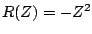 to convert the Butterworth filter into a high-quality
band-pass filter with center frequency  . A further transformation
can then be applied to shift the center frequency to any desired value
. A further transformation
can then be applied to shift the center frequency to any desired value  between 0 and
between 0 and  . The transformation will be of the form,
. The transformation will be of the form,
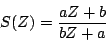
where  and
and  are real numbers and not both are zero. This
is a particular case of the general form given above for unit-circle-preserving
rational functions. We have 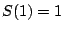 and 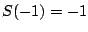,
and the top and bottom halves of the unit circle are transformed
symmetrically (if
are real numbers and not both are zero. This
is a particular case of the general form given above for unit-circle-preserving
rational functions. We have 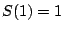 and 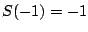,
and the top and bottom halves of the unit circle are transformed
symmetrically (if  goes to 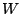 then 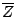 goes to 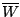).
The qualitative effect of the transformation 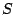 is to squash points of the
unit circle toward
goes to 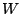 then 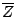 goes to 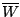).
The qualitative effect of the transformation 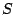 is to squash points of the
unit circle toward  or
or  .
.
In particular, given a desired center frequency ,
we wish to choose so that:
If we leave  as before, and let
as before, and let  be the transfer
function for a low-pass Butterworth filter, then the combined filter
with transfer function 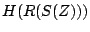
will be a band-pass filter with center frequency . Solving for
and gives:
be the transfer
function for a low-pass Butterworth filter, then the combined filter
with transfer function 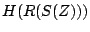
will be a band-pass filter with center frequency . Solving for
and gives:
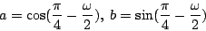
The new transfer function, , will have 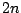 poles and
zeros (if  is the degree of the Butterworth filter ).
is the degree of the Butterworth filter ).
Knowing the transfer function is good, but even better is knowing the locations
of all the poles and zeros of the new filter, which we need to be able to
compute it using elementary filters. If is a pole of the transfer
function
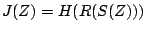, that is, if 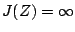, then  must
be a pole of . The same goes for zeros. To find a pole or zero of 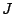
we set 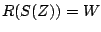, where is a pole or zero of , and solve for .
This gives:
must
be a pole of . The same goes for zeros. To find a pole or zero of 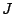
we set 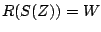, where is a pole or zero of , and solve for .
This gives:
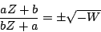
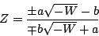
(Here and are as given above and we have used the fact that
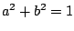). A sample pole-zero plot and frequency response of
are shown in Figure 8.20.
Figure 8.20:
Butterworth band-pass filter: (a) pole-zero diagram; (b)
frequency response. The center frequency is  . The bandwidth depends
both on center frequency and on the bandwidth of the original Butterworth
low-pass filter used.
. The bandwidth depends
both on center frequency and on the bandwidth of the original Butterworth
low-pass filter used.
| 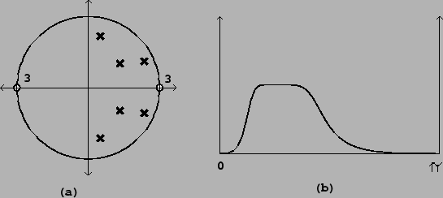 |
Next: Time-varying coefficients
Up: Designing filters
Previous: Stretching the unit circle
Contents
Index
Miller Puckette
2006-12-30